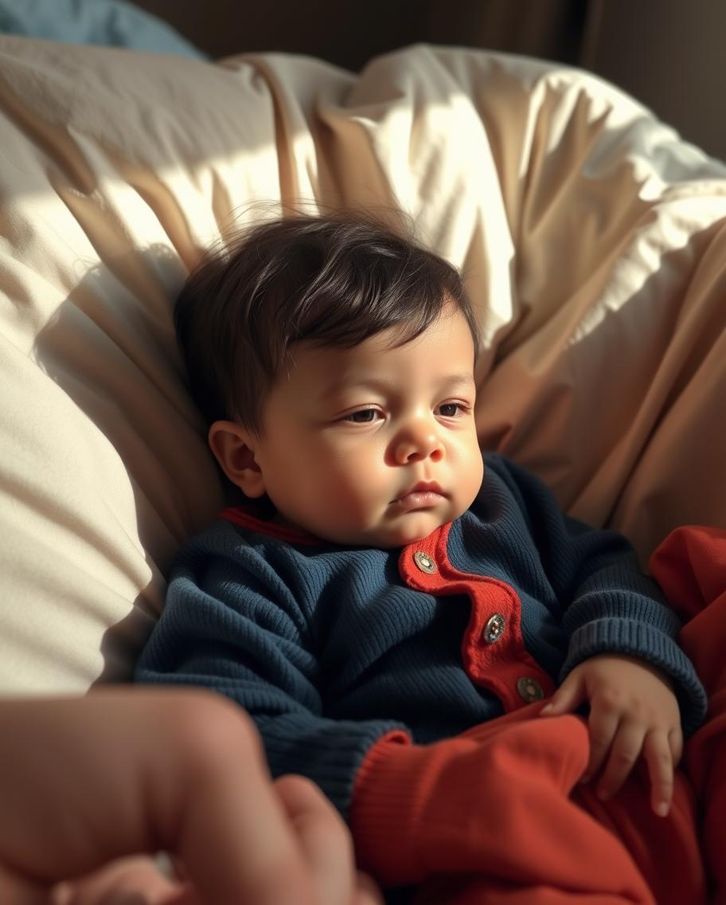
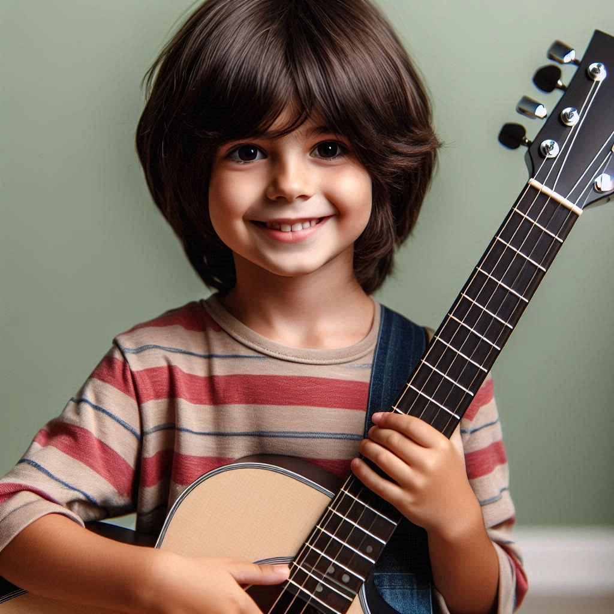
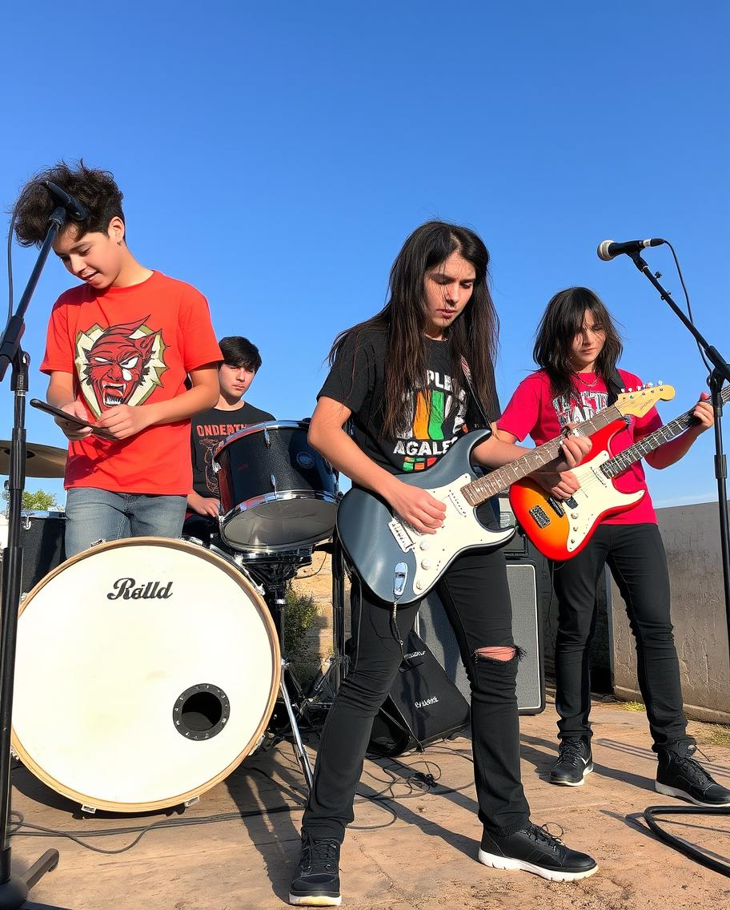
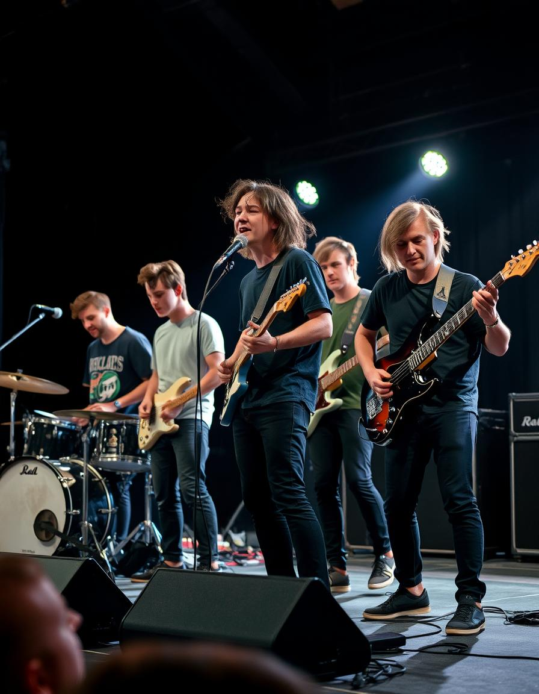
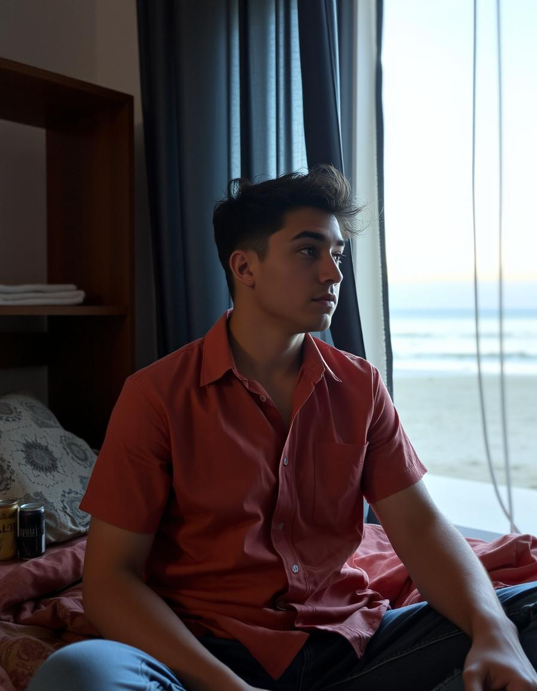
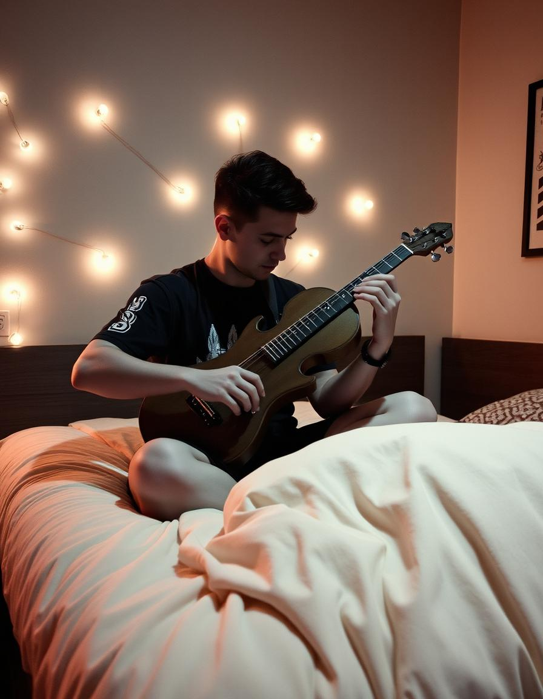

Minha História
Onde tudo começa
Em 20 de Julho de 1986, no interior de Jaguaruana-CE, assistia-se o nascimento de Dairo Maximiliano Lindemann. Ninguém sabia, mas graças a seus talentos musicais, que desde tão cedo demonstrava, viria a se tornar um dos maiores ícones do Rock Nacional e, posteriormente, do Sertanejo Universitário.
Vida pré-música
Apesar de ter passado por uma infância normal, ainda sentia algo de diferente em si. Não queria se considerar especial, e muito menos superior aos outros, mas ainda percebia uma chama mordaz ardendo no interior de seu peito, a qual não enxergava em mais ninguém.
Embasado em muita reflexão, gradualmente notou que, por se sentir tão cheio de pensamentos, ideias e personalidade que ansiava expor, aquilo não passava de seu desejo de expressar a própria singularidade de uma forma nunca antes vista. Só não sabia como o faria… ainda.
Em seu décimo primeiro aniversário, ganhou como presente de seu pai um violão, e de sua mãe muito incentivo para se despertar em um novo passatempo. Até aquele instante, nunca tinha sequer passado em sua cabeça a opção de se tornar um músico, mas foi só ter o instrumento em mãos que logo sentiu sua chama se intensificar. O mundo mudou para Dairo, uma vez que a possibilidade de manifestar seus sentimentos por meio de uma melodia, coisa chamativa e facilmente apreciada, era encantadora.
Buscou aprender a tocar quase imediatamente.
Vida pós-música
Seu desenvolvimento no violão era astronômico e imparável. Em poucos anos, Dairo já era capaz de reproduzir músicas só de ouvi-las uma única vez e até criava suas próprias composições. Se sentia no ápice de suas habilidades, emplacando em um estilo culto e suave, antes que um grande ocorrido mudasse o rumo das coisas novamente.
Um grupo de amigos em comum lhe apresentou o Rock 'n Roll. A paixão foi instantânea. O estilo era tudo que um jovem diferente e com sede de se externar queria ouvir e replicar, coisa que coube perfeitamente a Dairo.
Ao passo que o violão já não conseguia representar os sons radicais e distorcidos das bandas de Rock, decidiu juntar suas economias para comprar a si uma guitarra, a qual tocou com maestria desde o princípio. Como se não bastasse, Dairo ainda foi além: fundando sua primeira banda, nomeada Linquin Parque, aliando Sérgio Tanque (vocal), João Jordâncio(bateria) e Reginaldo Azul(baixo).
Começaram de baixo, recebendo pouco reconhecimento, subestimados, geralmente se apresentando no último horário de bares e outros festivais de cultura alternativa da região. Todavia, o talento de cada um dos membros, principalmente do guitarrista, não falharam em atrair atenção. Foi só Por Quem Os Sinos Dobram, lançamento da época, tocar em rádio nacional que de repente o crescimento se tornou exponencial, e agora o país inteiro esperava para os assistir em cima de um honrável palco iluminado.
Dairo estava em seu auge, usando isso de pretexto para afundar em um estilo de vida boêmio, se atirando sem piedade alguma nos prazeres mundanos, chegando a momentos que só pulava de festa em festa ininterruptamente. Se sentia praticamente obrigado a isso, porque como havia sido pego em um sucesso de um em um bilhão, achava que deveria elevá-lo ao máximo, caso contrário estaria desperdiçando toda a fama e influência que adquiriu com o todo seu esforço. Ainda assim, no fundo ele percebia algo de errado.
Embora usufruísse de uma vida que a maioria invejasse, acreditava que era justamente ela que o distanciava de si mesmo, porque, por ela, dava mais atenção para os holofotes do que para a sua própria noção de existir.
Demorou para que Dairo notasse isso, as coisas óbvias são as mais difíceis de perceber, mas quando ocorreu, teve a visão privilegiada de seus princípios desabando logo a sua frente.
Com horas de reflexão, conversa entre os membros de sua banda e uma busca incessante por conselhos, ele teve sua realização. Uma que deixou todos chocados, uma que ninguém esperaria e muito menos acreditaria.
Superação
Estava longe de ser fácil. Dairo sabia que seria alvo de controvérsia, julgamento, ódio e outros absurdos inimagináveis. Por conta disso, cogitou em desistir da ideia, largar a mão de uma nova mudança, continuar em sua alta posição já estabelecida ao invés de se jogar num buraco cujo o qual não conseguia enxergar a profundidade. Mas ele não poderia.
Na última instância, lembrou de seu objetivo inicial, o que tinha lhe trazido até ali, lhe feito prosseguir e amar o ramo da arte por incontáveis anos. A música de Dairo era um reflexo de sua pessoa, era o único requisito que usava para compor, e como poderia continuar com isso se tocaria apenas para agradar uma plateia? Fez o contrário, retificou-se e buscou se renovação para correr atrás daquilo que verdadeiramente o inspirava.
Recomeço
Seu interesse pelo sertanejo e sua cultura não eram recentes. Sempre ouviu um chamado, uma atração irracional pelo gênero, mas que omitia. Contudo, agora se encontrava livre das amarras do Rock 'n Roll, além de contar com o apoio de seus ex-colegas de banda, e conseguiria finalmente focar naquilo que o deixaria eternamente feliz.
Adotou o pseudônimo de Dairo MaxLindo, onde agora canta para aqueles que passaram, ou passam, por uma situação semelhante a sua e que buscam apoio ou conselho.
Um de seus versos mais memoráveis é: Não drene a confiança em si, para alimentar aqueles que apenas querem te segurar. Deixe que não acreditem em ti, cabe somente a você continuar
.